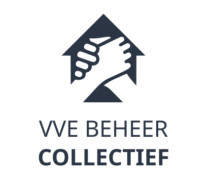

Mijn taken
Je kijkt mee bij
. Alleen inzien.
Terug naar mijn lijst
Taak
VvE
Notitie
+
Voeg toe
LOD
Nieuw dossier
VvE
Actiepunt
Status
Wie
Deadline
Subsidie-trajecten
Nieuw traject
VvE
Subsidie
Fase
Wie
Deadline
ALV's
Nieuwe ronde
VvE
Klaargezet
Uitnodiging
Notulen
Begroting
Status
ALV-archief
VvE
Afgerond op
Ongedaan maken
VvE
Actiepunt
Status
Fase
Behandelaar
Deadline
Opmerkingen
Verwijderen
Afronden
Annuleren
Opslaan
Annuleren
Doorgaan
VVE BEHEER
COLLECTIEF
Collectief Dashboard

Inloggen met Google
Doorsturen naar Google…
Beveiligde toegang · alleen medewerkers
versie